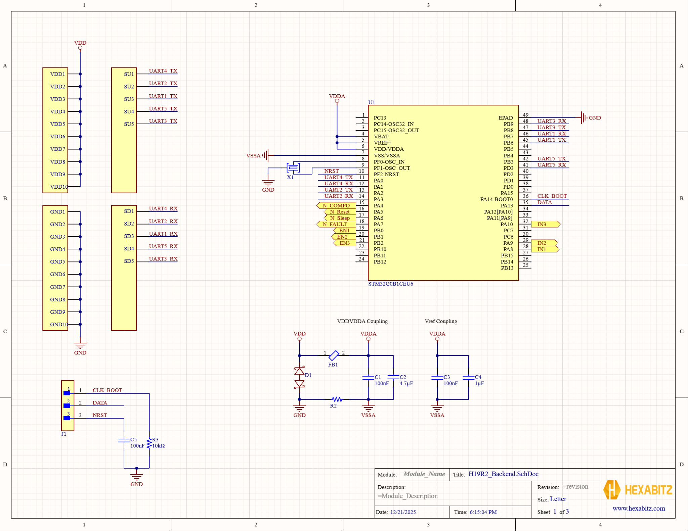
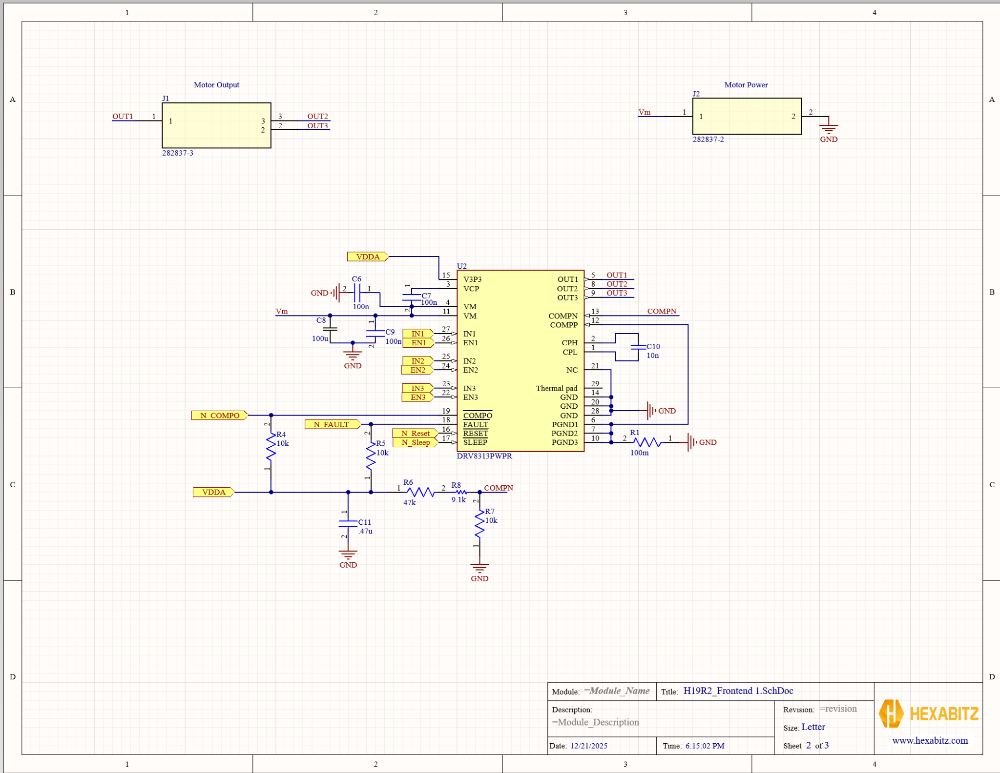

2.5A Sensored BLDC Control Module
Designed a compact 2.5A sensored BLDC control module using an STM32G0B1CEU6 and DRV8313PWPR for PWM commutation. Separated analog/digital/motor power domains with ferrite-bead isolation and tight decoupling, and routed controlled high-current paths validated with DRC.

Figure 0. PCBA hero image.
Quick Specs
- Motor Driver: TI DRV8313PWPR (3-phase BLDC driver)
- MCU: STM32G0B1CEU6 (control + commutation logic)
- Current Target: 2.5A class module (layout + power stage sized accordingly)
- Outputs: OUT1 / OUT2 / OUT3 to 3-phase motor connector
- Protection/Status: N_FAULT, N_COMPO monitoring + comparator/protection network
- Power Integrity: analog/digital separation with ferrite isolation + local decoupling
Project Overview
This module is split into a backend (control + interfaces) and a frontend (power stage + motor drive) to keep high di/dt switching currents away from sensitive logic and reference circuitry. The PCB layout prioritizes short high-current loops, tight decoupling placement, and clean separation of analog/digital domains for stable sensing and robust commutation in a noisy motor environment.
Backend Schematic (Control + Interfaces)
Figure 1. Backend schematic — STM32G0B1 control, programming header, and power-domain isolation.
Control + Signal Mapping
The backend centers around the STM32G0B1 and maps commutation control directly to the driver. The MCU drives IN1–IN3 and EN1–EN3 for phase control and PWM commutation, while driver status returns through N_FAULT and N_COMPO for protection handling and system diagnostics.
Bring-Up / Programming Header
A compact programming/debug header exposes CLK_BOOT, DATA, and NRST. The BOOT strap resistor and NRST conditioning capacitor support reliable firmware loading and reset behavior during early bring-up.
Power Domain Isolation
To protect analog measurements and reduce injected switching noise, VDD is filtered into VDDA through ferrite isolation with dedicated high-frequency and bulk decoupling. A separate reference coupling network stabilizes the MCU’s analog reference behavior under PWM switching conditions.
Frontend Schematic (Motor Driver + Power Integrity)
Figure 2. Frontend schematic — DRV8313 power stage, VM decoupling, protection pins, and motor/power connectors.
Power Stage + Connectors
The frontend uses the DRV8313 to drive OUT1/OUT2/OUT3 to a dedicated motor connector. Motor power (Vm) is brought in through a separate power connector, and the VM rail is supported by both bulk and high-frequency decoupling placed close to the driver pins to minimize loop area and reduce ringing/voltage droop.
Protection + Monitoring
The design integrates driver monitoring and protection features using FAULT/COMPO signaling and a COMPN/COMPP conditioning network to support configurable protection behavior (e.g., current limit / comparator thresholding). Pull-ups ensure clean logic-level reporting to the MCU for fault response and telemetry.
PCB Layout and Verification
The PCB implementation was driven by two requirements: robust high-current switching and stable control/sensing. High-current nets were treated as a distinct routing class with tight constraints, while sensitive logic/analog paths were kept away from switching nodes and return currents.
- High-current routing: short, wide copper for Vm/phase outputs/returns; minimized loop area.
- Decoupling strategy: tight placement near driver/MCU supply pins to control di/dt noise at the source.
- Domain separation: analog/digital partitioning with ferrite isolation and controlled grounding strategy.
- Verification: connectivity, spacing, and current-path constraints validated using Altium DRC.
Assembled PCBA
Figure 3. PCBA photo(s) — top/bottom views highlighting driver placement, decoupling, and high-current copper.
Bring-Up & Test Plan
- Power-up with bench supply current limit; verify VDD/VDDA rails and reset behavior.
- Program the MCU; validate GPIO/PWM patterns on ENx/INx lines.
- Spin motor unloaded at low duty; scope phase nodes and monitor N_FAULT/N_COMPO.
- Increase load/current while checking thermals, VM ripple, and protection response.